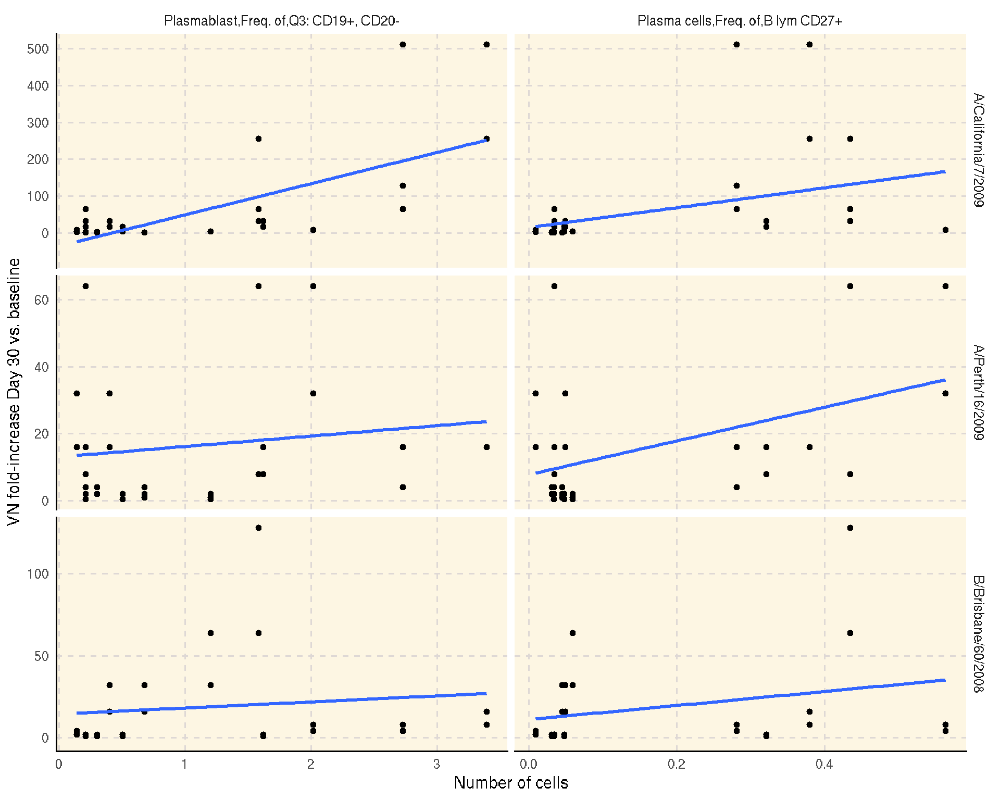

SDY144: Correlation of HAI/Virus Neutralizition Titer and Cell Counts
Renan Sauteraud
2020-01-14
Source:vignettes/report_SDY144.Rmd
report_SDY144.RmdCorrelations between hemagglutination inhibition (HI) and viral neutralization (VN) titers and plasmablast and plasma B cells among trivalent inactivated influenza vaccine (TIV) vaccinees.
This reports reproduces Figure 2 of Cao RG et al(2014) published as part of the original study.
Retrieve and manipulate data
We grab the datasets of interests with the getDataset method.
flow <- con$getDataset("fcs_analyzed_result")
hai <- con$getDataset("hai")
vn <- con$getDataset("neut_ab_titer")Then, we select the cell populations and time points of intereset.
pb <- flow[population_name_reported %in% c("Plasma cells,Freq. of,B lym CD27+",
"Plasmablast,Freq. of,Q3: CD19+, CD20-")]
pb <- pb[, population_cell_number := as.numeric(population_cell_number)]
pb <- pb[study_time_collected == 7 & study_time_collected_unit == "Days"] # 13 subjects
pb <- pb[, list(participant_id, population_cell_number, population_name_reported)]We compute the HI and VN titer as the fold-increase between baseline and day 30.
# HAI
hai <- hai[, response := value_preferred / value_preferred[study_time_collected == 0],
by = "virus,cohort,participant_id"][study_time_collected == 30]
hai <- hai[, list(participant_id, virus, response)]
dat_hai <- merge(hai, pb, by = "participant_id", allow.cartesian = TRUE)
# VN
vn <- vn[, response:= value_preferred/value_preferred[study_time_collected == 0],
by = "virus,cohort,participant_id"][study_time_collected == 30]
vn <- vn[, list(participant_id, virus, response)]
dat_vn <- merge(vn, pb, by = "participant_id", allow.cartesian = TRUE)
Visualize using ggplot2
Figure 2A
Correlation between the absolute number of plasmablasts and plasma B cells 7 days after vaccination with and fold-increase of HI titers from baseline to day 30 after vaccination.
ggplot(dat_hai, aes(x = population_cell_number, y = response)) +
geom_point() +
geom_smooth(method = "lm") +
facet_grid(virus ~ population_name_reported, scale = "free") +
xlab("Number of cells") +
ylab("HI fold-increase Day 30 vs. baseline") +
theme_IS()
Figure 2B
Correlation between the absolute number of plasmablasts and plasma B cells 7 days after vaccination with and fold-increase of VN titers from baseline to day 30 after vaccination.
ggplot(dat_vn, aes(x = population_cell_number, y = response)) +
geom_point() +
geom_smooth(method = "lm") +
facet_grid(virus ~ population_name_reported, scale = "free") +
xlab("Number of cells") +
ylab("VN fold-increase Day 30 vs. baseline") +
theme_IS()